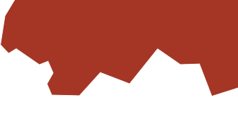

Мы возвращаем семьям их историю
Проводим генеалогические исследования по архивным документам и восстанавливаем родословную вашей семьи на 100+ лет. За именами и датами в архивах стоят реальные судьбы — мы помогаем их найти и сохранить.
Изучаем метрические книги, ревизские сказки и другие документы, чтобы восстановить ваш род на 300+ лет и оформить его в семейную реликвию с фамильным древом.
Мы возвращаем семьям их историю
Проводим генеалогические исследования по архивным документам и восстанавливаем родословную вашей семьи на 100+ лет. За именами и датами в архивах стоят реальные судьбы — мы помогаем их найти и сохранить.

Подарок, который не забудется
Родословная книга — не вещь, а история семьи, которую невозможно купить готовой. Мы оформляем найденное в родословную книгу с историческим контекстом и дизайном фамильного древа — подарок, который останется в семье на поколения, а не потеряется через месяц.

Десятки довольных клиентов по всей России
С нами уже работали семьи из Москвы и регионов — и продолжают возвращаться с новыми запросами и рекомендовать нас близким. Ценим доверие и работаем так, чтобы каждый клиент остался доволен результатом.

Изучаем метрические книги, ревизские сказки и другие документы, чтобы восстановить ваш род на 300+ лет и оформить его в семейную реликвию с фамильным древом.
Проводим генеалогические исследования по архивным документам и оформляем результат в удобном для вас формате
генеалогический поиск + исследование + дизайн
Семейная реликвия для детей и внуков. Проводим архивное исследование, находим документы о ваших предках и раскрываем их через исторический контекст. Результат оформляем в родословную книгу.
Узнать подробнее
генеалогический поиск
Находим архивные документы о ваших предках и оформляем в подробный отчёт — фотокопии документов с расшифровкой и поколенная роспись.
Узнать подробнее
Мы занимаемся генеалогическими исследованиями и составлением родословных — работаем с архивами по всей России, находим метрические книги, ревизские сказки и другие архивные записи и превращаем их в понятную историю вашего рода.
Каждое исследование начинается с того немногого, что уже известно семье, — имени, примерной даты, места рождения — и разворачивается в цепочку архивных запросов и расшифровок. Мы работаем напрямую с архивами и ЗАГСами, сверяем найденные данные между собой и оформляем результат в родословную книгу с историческим контекстом.
Помимо этого мы устанавливаем родство документально для наследственных дел, судов и оформления гражданства по происхождению.
Проводим генеалогические исследования по архивным документам и оформляем результат в удобном для вас формате

генеалогический поиск + исследование + дизайн
Семейная реликвия для детей и внуков. Проводим архивное исследование, находим документы о ваших предках и раскрываем их через исторический контекст. Результат оформляем в родословную книгу.
Узнать подробнее →
генеалогический поиск
Находим архивные документы о ваших предках и оформляем в подробный отчёт — фотокопии документов с расшифровкой и поколенная роспись.
Узнать подробнее →Работа сделана очень быстро, качественно, по приятной цене, вежливый и честный человек, приятно с такими сотрудничать. Максимально довольна результатом, спасибо большое!!!
 Юлия, Калуга
Юлия, Калуга
Знакомство с Глебом было предопределено кем‑то свыше, не иначе!)) Столько новых имен удалось узнать с его помощью — просто не перечесть! Там, куда я не знала как подступиться,
 Ирина, Москва
Ирина, Москва
Знакомство с Глебом было предопределено кем‑то свыше, не иначе!)) Столько новых имен удалось узнать с его помощью — просто не перечесть! Там, куда я не знала как подступиться...
 Ирина, Москва
Ирина, Москва
Спасибо за проделанную работу!! Генеалогическое древо очень понравилось!! Юбиляр прослезился, получив такой подарок!! В процессе работы замучила правками, спасибо за терпение!!
 Валентина, Рязань
Валентина, Рязань

Родился в Чугуеве Харьковской губернии. Дед — Василий Ефимович Репин — неслуживый казак, владел постоялым двором и вёл торговлю. Умер в 1830-х годах. Отец — Ефим Васильевич Репин (1804-1894) после введения военных поселений в 1817 году получил статус "военного поселянина" (это звание считалось презренным среди чугуевцев-казаков). Занимался торговлей лошадьми — ежегодно ездил за 300 вёрст на Дон и пригонял табуны на…

Путешествуя по Новгородской области, можно встретить многочисленные населенные пункты, названия которых восходят к корню бор-. Если взглянуть на растительность в округе, часто интуитивно становится понятно, что эти названия – вариации на тему бора как соснового леса. И действительно, Новгородская область славится своими хвойными лесами: они занимают половину территории, а 28% этих лесов занимают именно сосны. Корень…

Особенности почерков: от уставов до скорописи В XVIII–XIX веках почерки менялись. Если в XVII веке ещё встречался устав (буквы стояли ровно, как солдаты на параде), то позже в обиход вошла скоропись. Что это значит? — Буквы стали писаться слитно, с наклоном. — Появились выносные элементы — хвостики, завитки. — Одна и та же буква могла выглядеть по-разному.

А есть ли единая классификация топонимов? Их много, иногда они спорят между собой, поэтому мы не будем подробно останавливаться на громоздких классификациях лингвистов. На примере топонимов, образованных по природным признакам, а именно хвойного леса - бора, рассмотрим словообразование топонимов. Самый простой способ – прямой переход слова в топоним. Бывали в городке Бор, до которого можно добраться по канатной…
Оставьте сообщение на сайте или в соц. сетях